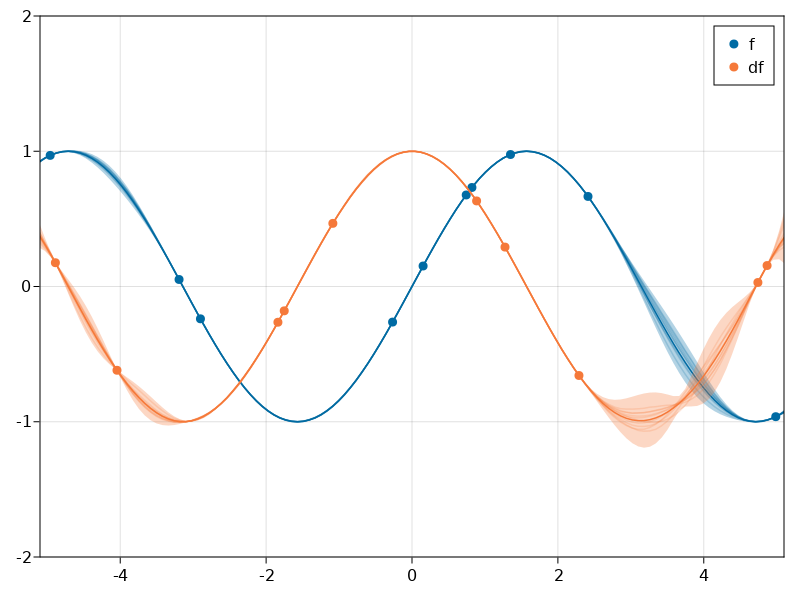
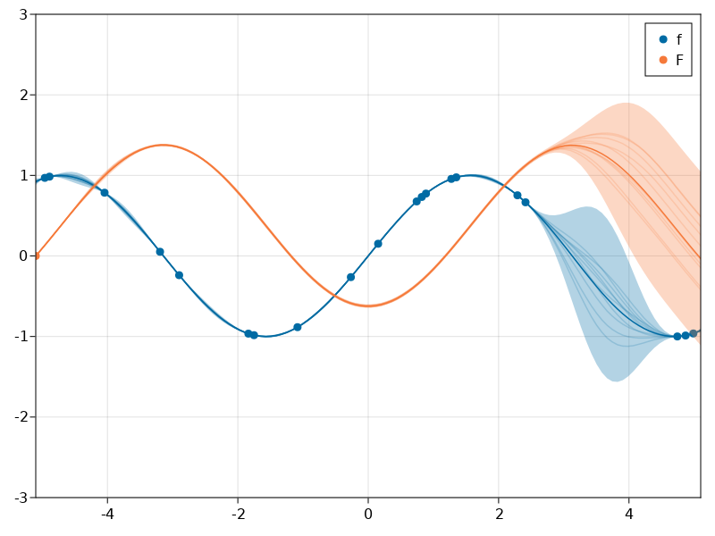

Differentation

You are seeing the HTML output generated by Documenter.jl and Literate.jl from the Julia source file. The corresponding notebook can be viewed in nbviewer.
No one has yet got around to doing a reasonably performant and general implementation of differentiation in the JuliaGPs ecosystem. Here we provide a correct, albeit unbearably slow implementation of differentiation as an affine transformation in Stheno.jl using FiniteDifferences.jl. This implementation should be correct, however. The test_implementation function hopefully ensures that.
The purpose of this example is to provide a template on which others could build.
using AbstractGPs
using AbstractGPsMakie
using CairoMakie
using Distributions
using FiniteDifferences
using LinearAlgebra
using Random
using Stheno
using Test
import AbstractGPs: mean, cov, var
using AbstractGPs: AbstractGP
using AbstractGPs.TestUtils: test_internal_abstractgps_interface
using Stheno: DerivedGP
derivative(f::AbstractGP) = DerivedGP((derivative, f), f.gpc)
const deriv_args = Tuple{typeof(derivative), AbstractGP}
function mean((_, f)::deriv_args, x::AbstractVector{<:Real})
return zeros(length(x))
return ForwardDiff.derivative(α -> (mean(f, α * x)), 1.0)
end
function cov(args::deriv_args, x::AbstractVector{<:Real})
return cov(args, x, x)
end
function var((_, f)::deriv_args, x::AbstractVector{<:Real})
return var((derivative, f), x, x)
end
function cov((_, f)::deriv_args, x::AbstractVector{<:Real}, x′::AbstractVector{<:Real})
fdm = central_fdm(5, 1)
cols_of_C = map(x′) do x′n
col_elements = map(x) do xn
FiniteDifferences.grad(
fdm,
xn -> FiniteDifferences.grad(
fdm,
x′n -> cov(f, [xn], [x′n]),
x′n,
),
xn
)[1]
end
end
return reduce(hcat, cols_of_C)
end
function var((_, f)::deriv_args, x::AbstractVector{<:Real}, x′::AbstractVector{<:Real})
fdm = central_fdm(5, 1)
elements = map(x, x′) do xn, x′n
FiniteDifferences.grad(
fdm,
xn -> FiniteDifferences.grad(
fdm,
x′n -> cov(f, [xn], [x′n]),
x′n,
),
xn
)[1]
end
return reduce(vcat, elements)
end
function cov(
(_, f)::deriv_args,
f′::AbstractGP,
x::AbstractVector{<:Real},
x′::AbstractVector{<:Real},
)
fdm = central_fdm(5, 1)
cols_of_C = map(x′) do x′n
col_elements = map(x) do xn
FiniteDifferences.grad(
fdm,
xn -> cov(f, [xn], [x′n]),
xn,
)[1]
end
end
return reduce(hcat, cols_of_C)
end
function cov(
f::AbstractGP,
args::deriv_args,
x::AbstractVector{<:Real},
x′::AbstractVector{<:Real},
)
return collect(cov(args, f, x′, x)')
end
function test_implementation()
# Specify model and inputs.
rng = MersenneTwister(123456)
f = @gppp let
f = GP(SEKernel())
df = derivative(f)
end
x1 = GPPPInput(:df, randn(rng, 7))
x2 = GPPPInput(:df, randn(rng, 6))
x3 = GPPPInput(:f, randn(rng, 5))
# Verify self-consistency.
test_internal_abstractgps_interface(rng, f, x1, x2)
test_internal_abstractgps_interface(rng, f, x1, x3)
test_internal_abstractgps_interface(rng, f, x3, x2)
# Check that we can approximately differentiate simple trigonometric functions.
x_obs = collect(range(-3.0, 3.0; length=25))
x_pred = collect(range(-2.5, 2.5; length=25))
x_df_pred = GPPPInput(:df, x_pred)
let
f_post = posterior(f(GPPPInput(:f, x_obs), 1e-12), map(sin, x_obs))
@test map(cos, x_pred) ≈ mean(f_post, x_df_pred) rtol=1e-5
@test map(cos, x_pred) ≈ rand(f_post(x_df_pred, 1e-8)) rtol=1e-3
end
let
f_post = posterior(f(GPPPInput(:f, x_obs), 1e-12), map(cos, x_obs))
@test -map(sin, x_pred) ≈ mean(f_post, GPPPInput(:df, x_pred)) rtol=1e-5
@test -map(sin, x_pred) ≈ rand(f_post(x_df_pred, 1e-8)) rtol=1e-3
end
end
test_implementation()Test Passed
Expression: ≈(-(map(sin, x_pred)), rand(f_post(x_df_pred, 1.0e-8)), rtol = 0.001)
Evaluated: ≈([0.5984721441039564, 0.751231555699293, 0.8715031914412654, 0.9540857816096938, 0.9954079577517649, 0.9936827001581868, 0.9489846193555862, 0.863246729498086, 0.7401768531960371, 0.5850972729404622, 0.40471456356112473, 0.20682955954864105, -0.0, -0.20682955954864105, -0.40471456356112473, -0.5850972729404622, -0.7401768531960371, -0.863246729498086, -0.9489846193555862, -0.9936827001581868, -0.9954079577517649, -0.9540857816096938, -0.8715031914412654, -0.751231555699293, -0.5984721441039564], [0.5985483096679677, 0.7512048369713578, 0.8715215666428381, 0.9541191966650626, 0.9953993967107292, 0.9937258674571673, 0.9490194557846036, 0.8633255216743915, 0.7402395574357632, 0.5851194356839197, 0.4048548358105896, 0.20683100988315073, -8.899356818256554e-6, -0.20690951288489356, -0.4046930059796584, -0.5850732747525441, -0.7401507259928594, -0.863365265158883, -0.9490928810981328, -0.9939972705692975, -0.9953607511865098, -0.9539796593681874, -0.871558740489782, -0.7512923036984817, -0.5983975752628414]; rtol = 0.001)Example: Inference given observations of process and its derivative
using CairoMakie: RGB
function colours()
return Dict(
:blue => RGB(0/255, 107/255, 164/255),
:cyan => RGB(75/255, 166/255, 251/255),
:red => RGB(200/255, 82 / 255, 0 / 255),
:pink => RGB(169/255, 90/255, 161/255),
:black => RGB(0.0, 0.0, 0.0),
:orange => RGB(245/255, 121/255, 58/255),
)
end
band_alpha() = 0.3
sample_alpha() = 0.2
point_alpha() = 1.0
let
# Simple two-component model.
f = @gppp let
f = GP(SEKernel())
df = derivative(f)
end
# Specify inputs at which to make observations.
rng = MersenneTwister(123456)
x_f = GPPPInput(:f, rand(rng, Uniform(-5.0, 5.0), 10))
x_df = GPPPInput(:df, rand(rng, Uniform(-5.0, 5.0), 10))
x = BlockData(x_f, x_df)
# Build observations from simple functions.
y_f = map(sin, x_f.x)
y_df = map(cos, x_df.x)
y = vcat(y_f, y_df)
# Build posterior and visualise it.
f_post = posterior(f(x, 1e-12), y)
x_plot = collect(range(-6.0, 6.0; length=150))
fig = Figure()
ax = Axis(fig[1, 1])
xlims = (-5.1, 5.1)
ylims = (-2, 2)
let
f_xf = f_post(GPPPInput(:f, x_plot), 1e-6)
ms = marginals(f_xf)
symband!(
ax, x_plot, mean.(ms), std.(ms);
bandscale=3, color=(colours()[:blue], band_alpha()),
)
gpsample!(
ax, x_plot, f_xf;
samples=10, color=(colours()[:blue], sample_alpha()),
)
scatter!(ax, x_f.x, y_f; color=(colours()[:blue], point_alpha()), label="f")
end
let
f_xdf = f_post(GPPPInput(:df, x_plot), 1e-6)
ms = marginals(f_xdf)
symband!(
ax, x_plot, mean.(ms), std.(ms);
bandscale=3, color=(colours()[:orange], band_alpha()),
)
gpsample!(
ax, x_plot, f_xdf;
samples=10, color=(colours()[:orange], sample_alpha()),
)
scatter!(ax, x_df.x, y_df; color=(colours()[:orange], point_alpha()), label="df")
end
axislegend(ax; position=:rt)
xlims!(ax, xlims)
ylims!(ax, ylims)
fig
end
Example: Integration via Antiderivatives
let
# Build a model in which we place a prior over the integral, and differentiate it
# to obtain the process of which to compute the integral.
f = @gppp let
F = GP(SEKernel())
f = derivative(F)
end
# Build inputs. Integrate from -5.1.
rng = MersenneTwister(123456)
x_F = GPPPInput(:F, [-5.1])
x_f = GPPPInput(:f, rand(rng, Uniform(-5.0, 5.0), 20))
x = BlockData(x_F, x_f)
# Build observations from simple functions. We know that the integral is 0 at -5.1.
y_F = [0.0]
y_f = map(sin, x_f.x)
y = vcat(y_F, y_f)
# Build posterior and visualise it.
f_post = posterior(f(x, 1e-6), y)
x_plot = collect(range(-6.0, 6.0; length=150))
fig = Figure()
ax = Axis(fig[1, 1])
xlims = (-5.1, 5.1)
ylims = (-3, 3)
let
f_xf = f_post(GPPPInput(:f, x_plot), 1e-6)
ms = marginals(f_xf)
symband!(
ax, x_plot, mean.(ms), std.(ms);
bandscale=3, color=(colours()[:blue], band_alpha()),
)
gpsample!(
ax, x_plot, f_xf;
samples=10, color=(colours()[:blue], sample_alpha()),
)
scatter!(ax, x_f.x, y_f; color=(colours()[:blue], point_alpha()), label="f")
end
let
f_xdf = f_post(GPPPInput(:F, x_plot), 1e-6)
ms = marginals(f_xdf)
symband!(
ax, x_plot, mean.(ms), std.(ms);
bandscale=3, color=(colours()[:orange], band_alpha()),
)
gpsample!(
ax, x_plot, f_xdf;
samples=10, color=(colours()[:orange], sample_alpha()),
)
scatter!(ax, x_F.x, y_F; color=(colours()[:orange], point_alpha()), label="F")
end
axislegend(ax; position=:rt)
xlims!(ax, xlims)
ylims!(ax, ylims)
fig
end
This page was generated using Literate.jl.